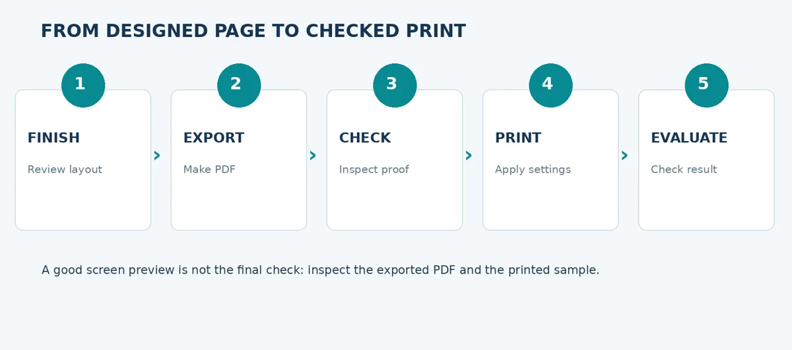
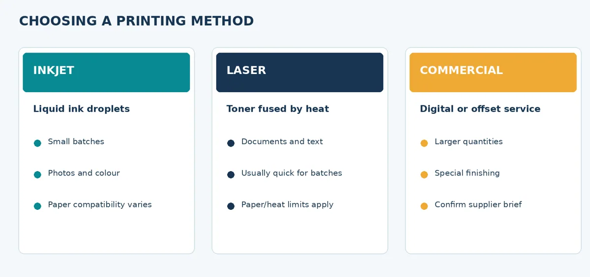
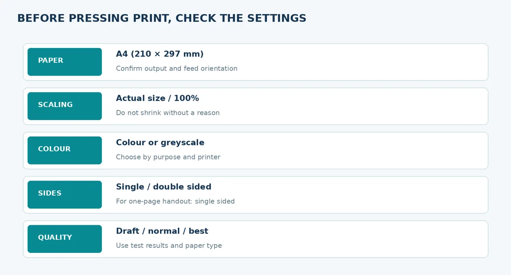
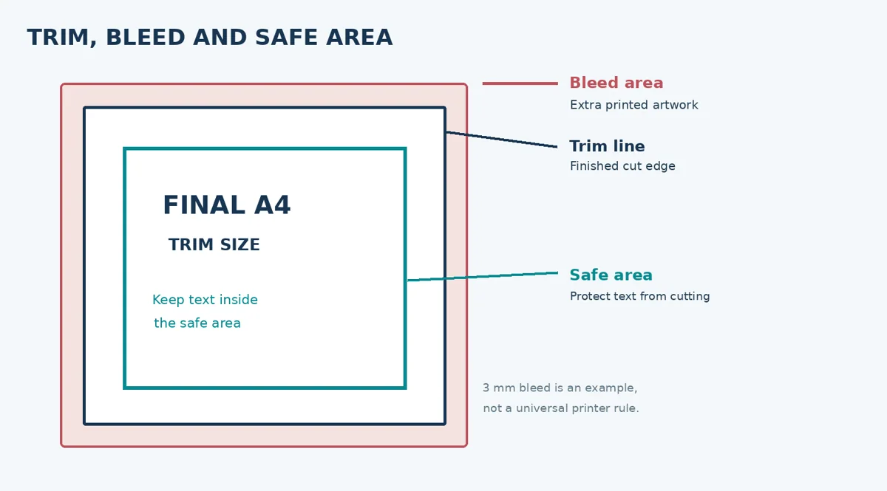
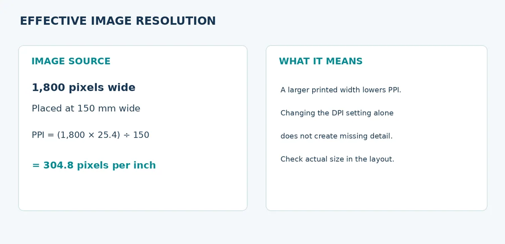
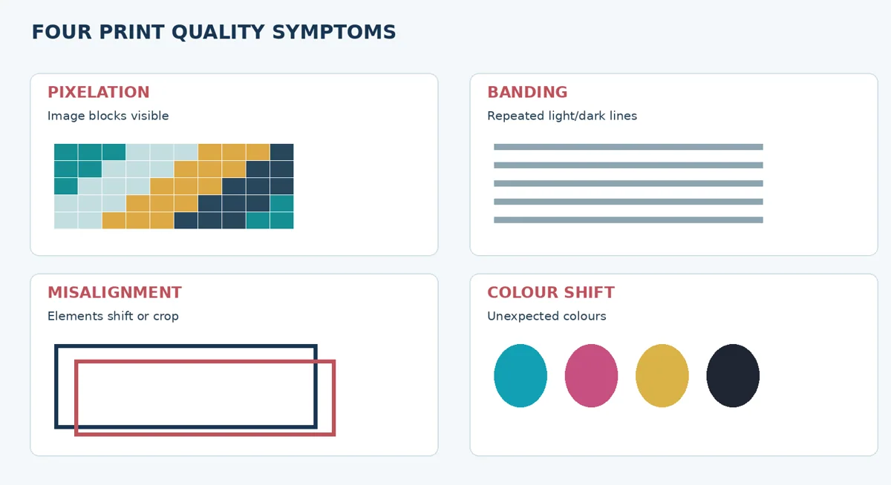

Printing Desktop Publishing Documents
Make sensible printing choices and recognise common print problems.
Lecture notes
A publication does not stop at the computer screen. When a hand-out is printed, its paper, colours, size and physical clarity affect how well the message is received. This lecture explains the basic decisions needed to print the “Stay Safe Online” A4 hand-out prepared in Lectures 7 and 8.
Learning outcomes
- Compare common printing methods and choose one for a simple document.
- Select basic paper and printer settings for an A4 hand-out.
- Explain print-ready PDFs, trim, safe areas and the purpose of bleed.
- Calculate effective image resolution and simple printing costs.
- Identify common print defects and choose safe first troubleshooting steps.
1. From a designed page to a printed publication
Desktop publishing involves planning, composing and preparing documents for delivery. The hand-out can be shared as a PDF, printed on a local office printer or sent to a printing service. Each route requires a quality check. A design that appears correct inside InDesign may still contain a low-resolution photograph, incorrect paper size or text too close to the cut edge.

Figure 1. A simple production workflow; proofing and checking remain essential.
2. Types of printing and when to use them
An inkjet printer places droplets of ink onto paper. It can produce detailed colour images, but output depends on suitable paper, ink and printer settings. A laser printer uses toner fixed to the page with heat and is often practical for clear text and repeated office documents. Commercial printing may involve digital presses or offset printing; the preferred process depends on quantity, colour, paper, finishing and the service provider.

Figure 2. Different printing methods suit different tasks.
Paper selection matters. Paper weight is commonly described in grams per square metre (gsm). Lightweight office sheets can suit ordinary hand-outs, whereas thicker stock may suit covers or display cards. A paper with a coating behaves differently from uncoated paper, so printed colours and drying characteristics may change.
3. Understanding print settings
Before printing, check the correct document size, orientation, paper type, scaling, colour mode, print quality and number of copies. For our A4 portrait hand-out, the final page measures 210 × 297 mm. “Actual size” or 100% scaling is usually appropriate when the file and paper match. “Fit to page” may reduce the document unexpectedly, even when the original PDF is correct.

Figure 3. Example checks in a printing dialogue; available labels vary by printer.
Duplex printing places information on both sides of the sheet. For a one-sided A4 hand-out it is unnecessary; when used for a booklet or multipage document, the binding edge and flip-edge setting must be checked using a sample. Print drivers use slightly different terminology, so a test copy is safer than guessing.
4. File formats and the print-ready PDF
The original .indd document remains editable and should be kept with linked images and fonts. A PDF preserves the intended page arrangement for sharing and proofing. However, not every PDF is automatically print-ready: a suitable print PDF may require embedded fonts, appropriate image resolution, correct page size, colour handling and bleed settings. Always follow the printer’s specifications where they are provided.
The trim line marks the final edge after cutting. Bleed is extra background artwork extending beyond that edge to prevent unprinted slivers after trimming. A safe area keeps important words and graphics comfortably inside the cut edge. A 3 mm bleed is often used as a teaching example but is not a universal requirement; confirm the actual value with the printing provider.

Figure 4. Trim, bleed and safe area are different parts of page preparation.
5. Image resolution: a useful calculation
An image contains a fixed number of pixels. Effective pixels per inch (PPI) describes how densely those pixels are used at the final printed size. Larger placement reduces effective PPI. A useful estimate is:
Effective PPI = pixel width × 25.4 ÷ printed width in millimetres
For example, an illustration 1,800 pixels wide, placed at 150 mm, provides 1,800 × 25.4 ÷ 150 = 304.8 PPI. Whether this is suitable depends on viewing distance, detail, printer and output method. The often-used 300 PPI figure is a helpful target for many high-quality close-viewed images, not a compulsory setting for every publication.

Figure 5. Worked example of effective print resolution.
6. Evaluating print quality and diagnosing faults
Inspect text edges, image detail, placement, colour, cropping and any visible streaks. Pixelation produces square-looking detail when an image has too few pixels for its size. Banding produces unwanted repeated lines and can have multiple causes. Misalignment occurs when text or images appear shifted, while colour shifts can result from media, calibration, ink/toner or settings. One symptom does not prove a single cause.

Figure 6. Conceptual examples of common problems encountered in printed output.
A safe troubleshooting sequence starts with comparing the printed result against the PDF, checking paper and driver settings, printing a new test page and recording observations. Follow the equipment manufacturer’s instructions when clearing a paper jam or cleaning a printer. Do not touch hot components or reach into moving machinery.
7. Managing quantities and costs
Cost estimation can be simple. A one-page single-sided hand-out for 30 students requires 30 sheets. If a fictional teaching price is TZS 150 per printed sheet, the estimated printing charge is 30 × 150 = TZS 4,500, excluding other costs. Actual prices vary and should be obtained from a printer.
Key ideas to remember
Good print preparation begins with a correct editable source and a carefully inspected PDF. Select paper and settings for the real output, not merely for what looks attractive on screen. Effective image resolution depends on printed dimensions. Always test, inspect and document a print before producing many copies.
Review questions
1. How does laser printing differ from inkjet printing?
2. Why might “Fit to page” change an A4 document?
3. Distinguish trim, bleed and safe area.
4. An image is 1,200 pixels wide and prints at 150 mm. Calculate its effective PPI.
5. List four common print defects and one sensible first check for each.
6. Estimate the printing charge for 40 one-page copies at a fictional TZS 120 per copy.
Quick troubleshooting reference
| Printed symptom | Check first | Appropriate next action |
|---|---|---|
| Print is smaller than the PDF | Page size, “Fit to page” or scaling | Check A4 and retry a test at actual size. |
| Image appears blocky | Source pixel dimensions and placement width | Use a higher-detail image or reduce its size. |
| Text appears cut off | Original PDF and printable margins | Correct the source or settings; export a fresh proof. |
| Colours appear unexpectedly dull | Paper type, printer mode and colour handling | Use appropriate media and test printer settings. |
Worked practice: a change in printed size
A 1,200-pixel-wide image placed at 150 mm gives 203.2 PPI. If the same image is reduced to 100 mm, its effective resolution becomes 1,200 × 25.4 ÷ 100 = 304.8 PPI. This illustrates why image quality should be judged at the actual size used on the page.
When you receive a real printing assignment, request the printer’s paper, colour, bleed and PDF requirements. Values in the classroom exercises are examples rather than universal commercial standards.
Simple practical activity
Check a print-ready hand-out
Inspect an A4 PDF for paper size, margins and readability. Choose suitable print settings, calculate the effective PPI for one image and identify one likely printing problem.
Read the full guided practical instructions
Name: _________________________ Registration number: __________________ Date: __________
Aim and materials
Prepare and inspect one A4 hand-out for printing. Use your final PDF from Lecture 8, the provided A4 print-test chart, the printing checklist and a printer where available. If a printer is unavailable, complete the settings and diagnosis sections using the supplied visual examples.
Part A. Preflight checklist
| Check | Your observation (tick or explain) |
|---|---|
| A4 portrait: 210 × 297 mm | |
| Complete readable title and three safety tips | |
| No missing photographs, icons or overset text | |
| Margins and safe area kept clear | |
| PDF re-opened and inspected at 100% |
Part B. Plan printer settings
| Setting | Selected value and reason |
|---|---|
| Printer and paper type | |
| Page size and orientation | |
| Scaling / actual size | |
| Single / double sided | |
| Colour or greyscale | |
| Number of copies |
Part C. Calculate and interpret
1. A photograph is 1,200 pixels wide and is placed at 150 mm on the hand-out. Calculate effective PPI. Show your working.
________________________________________________________________________________
2. You need 30 one-page copies of the hand-out. At a fictional charge of TZS 150 per printed sheet, calculate the charge (before other costs).
________________________________________________________________________________
Part D. Print or diagnose
If a printer is available, print one copy of the final PDF and one test chart. Otherwise examine the supplied Fig06 and answer the diagnosis prompts.
| Observed issue | Possible cause to check | Safe next step |
|---|---|---|
| Blurred/pixelated image | ||
| Repeated bands/lines | ||
| Unexpected size or margins | ||
| Incorrect or dull colours |
Part E. Record quality and submit
| Question | Student response |
|---|---|
| One aspect of the output that was clear | |
| One problem noticed | |
| What setting or file correction would help? |
Submission: completed worksheet, final PDF and (where available) one printed example or photograph of the print. Keep your editable project from Lecture 8. A paper-based diagnosis is an interim alternative, not proof that a student has physically printed.
Review questions
Try explaining each answer in your own words before using the quiz.
- Compare inkjet and laser printing for a small hand-out.
- Calculate effective PPI for a 900-pixel image printed 3 inches wide.
- Name two common print defects and their possible causes.